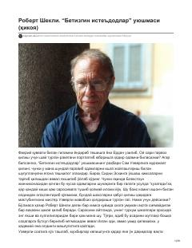

BIG'ayritabiiy qobiliyatli insonlar va ularni izlovchi tashkilot haqidagi qiziqarli fantastik hikoya.
Ushbu hikoyada g'ayritabiiy qobiliyatlarga ega insonlarni ishga joylashtirish bilan shug'ullanuvchi tashkilot rahbari Sem Ueverli va o'zini olim deb atovchi g'alati mijoz Sidni Eskin o'rtasidagi voqealar tasvirlanadi. Muallif inson ruhiyati va g'ayritabiiy qobiliyatlarni o'ziga xos yumor bilan yoritib beradi.